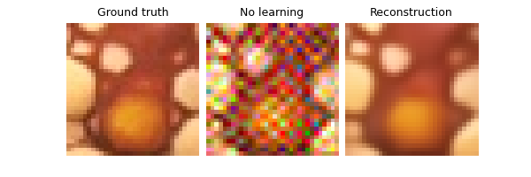
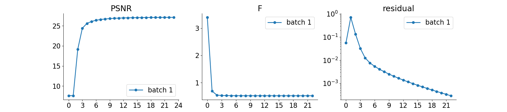

Note
Go to the end to download the full example code.
Regularization by Denoising (RED) for Super-Resolution.
We use as plug-in denoiser the Gradient-Step Denoiser (GSPnP) which provides an explicit prior.
Hurault, S., Leclaire, A., & Papadakis, N. “Gradient Step Denoiser for convergent Plug-and-Play” In International Conference on Learning Representations.
import deepinv as dinv
from pathlib import Path
import torch
from torch.utils.data import DataLoader
from deepinv.optim.data_fidelity import L2
from deepinv.optim.prior import RED
from deepinv.optim.optimizers import optim_builder
from deepinv.training import test
from torchvision import transforms
from deepinv.utils.parameters import get_GSPnP_params
from deepinv.utils.demo import load_dataset, load_degradation
Setup paths for data loading and results.
BASE_DIR = Path(".")
ORIGINAL_DATA_DIR = BASE_DIR / "datasets"
DATA_DIR = BASE_DIR / "measurements"
RESULTS_DIR = BASE_DIR / "results"
DEG_DIR = BASE_DIR / "degradations"
# Set the global random seed from pytorch to ensure
# the reproducibility of the example.
torch.manual_seed(0)
device = dinv.utils.get_freer_gpu() if torch.cuda.is_available() else "cpu"
Load base image datasets and degradation operators.
In this example, we use the Set3C dataset and a motion blur kernel from Levin et al. (2009).
dataset_name = "set3c"
img_size = 256 if torch.cuda.is_available() else 32
operation = "super-resolution"
dataset_path = ORIGINAL_DATA_DIR / dataset_name
val_transform = transforms.Compose(
[transforms.CenterCrop(img_size), transforms.ToTensor()]
)
dataset = load_dataset(dataset_name, ORIGINAL_DATA_DIR, transform=val_transform)
# Generate the degradation operator.
kernel_index = 1
kernel_torch = load_degradation(
"kernels_12.npy", DEG_DIR / "kernels", index=kernel_index
)
kernel_torch = kernel_torch.unsqueeze(0).unsqueeze(
0
) # add batch and channel dimensions
# Use parallel dataloader if using a GPU to fasten training, otherwise, as all computes are on CPU, use synchronous dataloading.
num_workers = 4 if torch.cuda.is_available() else 0
factor = 2 # down-sampling factor
n_channels = 3 # 3 for color images, 1 for gray-scale images
n_images_max = 3 # Maximal number of images to restore from the input dataset
noise_level_img = 0.03 # Gaussian Noise standart deviation for the degradation
p = dinv.physics.Downsampling(
img_size=(n_channels, img_size, img_size),
factor=factor,
filter=kernel_torch,
device=device,
noise_model=dinv.physics.GaussianNoise(sigma=noise_level_img),
)
# Generate a dataset in a HDF5 folder in "{dir}/dinv_dataset0.h5'" and load it.
measurement_dir = DATA_DIR / dataset_name / operation
dinv_dataset_path = dinv.datasets.generate_dataset(
train_dataset=dataset,
test_dataset=None,
physics=p,
device=device,
save_dir=measurement_dir,
train_datapoints=n_images_max,
num_workers=num_workers,
)
dataset = dinv.datasets.HDF5Dataset(path=dinv_dataset_path, train=True)
kernels_12.npy degradation downloaded in degradations/kernels
Dataset has been saved in measurements/set3c/super-resolution
Setup the PnP algorithm. This involves in particular the definition of a custom prior class.
We use the proximal gradient algorithm to solve the super-resolution problem with GSPnP.
# Parameters of the algorithm to solve the inverse problem
early_stop = True # Stop algorithm when convergence criteria is reached
crit_conv = "cost" # Convergence is reached when the difference of cost function between consecutive iterates is
# smaller than thres_conv
thres_conv = 1e-5
backtracking = True
use_bicubic_init = False # Use bicubic interpolation to initialize the algorithm
batch_size = 1 # batch size for evaluation is necessarily 1 for early stopping and backtracking to work.
# load specific parameters for GSPnP
lamb, sigma_denoiser, stepsize, max_iter = get_GSPnP_params(operation, noise_level_img)
params_algo = {
"stepsize": stepsize,
"g_param": sigma_denoiser,
"lambda": lamb,
}
# Select the data fidelity term
data_fidelity = L2()
# The GSPnP prior corresponds to a RED prior with an explicit `g`.
# We thus write a class that inherits from RED for this custom prior.
class GSPnP(RED):
r"""
Gradient-Step Denoiser prior.
"""
def __init__(self, *args, **kwargs):
super().__init__(*args, **kwargs)
self.explicit_prior = True
def forward(self, x, *args, **kwargs):
r"""
Computes the prior :math:`g(x)`.
:param torch.tensor x: Variable :math:`x` at which the prior is computed.
:return: (torch.tensor) prior :math:`g(x)`.
"""
return self.denoiser.potential(x, *args, **kwargs)
method = "GSPnP"
denoiser_name = "gsdrunet"
# Specify the Denoising prior
prior = GSPnP(denoiser=dinv.models.GSDRUNet(pretrained="download").to(device))
# we want to output the intermediate PGD update to finish with a denoising step.
def custom_output(X):
return X["est"][1]
# instantiate the algorithm class to solve the IP problem.
model = optim_builder(
iteration="PGD",
prior=prior,
g_first=True,
data_fidelity=data_fidelity,
params_algo=params_algo,
early_stop=early_stop,
max_iter=max_iter,
crit_conv=crit_conv,
thres_conv=thres_conv,
backtracking=backtracking,
get_output=custom_output,
verbose=False,
)
# Set the model to evaluation mode. We do not require training here.
model.eval()
Downloading: "https://huggingface.co/deepinv/gradientstep/resolve/main/GSDRUNet_torch.ckpt?download=true" to /home/runner/.cache/torch/hub/checkpoints/GSDRUNet_torch.ckpt
0%| | 0.00/64.9M [00:00<?, ?B/s]
2%|▏ | 1.12M/64.9M [00:00<00:06, 11.1MB/s]
3%|▎ | 2.25M/64.9M [00:00<00:05, 11.3MB/s]
5%|▌ | 3.38M/64.9M [00:00<00:06, 10.4MB/s]
7%|▋ | 4.38M/64.9M [00:00<00:06, 10.3MB/s]
8%|▊ | 5.38M/64.9M [00:00<00:06, 10.3MB/s]
10%|█ | 6.50M/64.9M [00:00<00:05, 10.7MB/s]
12%|█▏ | 7.62M/64.9M [00:00<00:05, 10.2MB/s]
13%|█▎ | 8.62M/64.9M [00:00<00:05, 10.3MB/s]
15%|█▌ | 9.75M/64.9M [00:00<00:05, 10.7MB/s]
17%|█▋ | 10.9M/64.9M [00:01<00:05, 10.3MB/s]
18%|█▊ | 12.0M/64.9M [00:01<00:05, 10.7MB/s]
20%|██ | 13.1M/64.9M [00:01<00:05, 10.2MB/s]
22%|██▏ | 14.1M/64.9M [00:01<00:05, 10.3MB/s]
24%|██▎ | 15.4M/64.9M [00:01<00:05, 10.1MB/s]
26%|██▌ | 16.6M/64.9M [00:01<00:04, 10.4MB/s]
28%|██▊ | 17.9M/64.9M [00:01<00:04, 10.5MB/s]
29%|██▉ | 19.0M/64.9M [00:01<00:04, 10.8MB/s]
31%|███ | 20.1M/64.9M [00:02<00:04, 10.4MB/s]
33%|███▎ | 21.1M/64.9M [00:02<00:04, 10.4MB/s]
34%|███▍ | 22.1M/64.9M [00:02<00:04, 10.4MB/s]
36%|███▌ | 23.2M/64.9M [00:02<00:04, 10.7MB/s]
38%|███▊ | 24.4M/64.9M [00:02<00:04, 10.3MB/s]
39%|███▉ | 25.5M/64.9M [00:02<00:03, 10.7MB/s]
41%|████ | 26.6M/64.9M [00:02<00:03, 10.3MB/s]
43%|████▎ | 27.6M/64.9M [00:02<00:03, 10.3MB/s]
44%|████▍ | 28.8M/64.9M [00:02<00:03, 10.7MB/s]
46%|████▌ | 29.9M/64.9M [00:03<00:03, 10.3MB/s]
48%|████▊ | 30.9M/64.9M [00:03<00:03, 10.3MB/s]
49%|████▉ | 32.0M/64.9M [00:03<00:03, 10.7MB/s]
51%|█████ | 33.1M/64.9M [00:03<00:03, 10.3MB/s]
53%|█████▎ | 34.1M/64.9M [00:03<00:03, 10.3MB/s]
54%|█████▍ | 35.1M/64.9M [00:03<00:03, 10.4MB/s]
56%|█████▌ | 36.1M/64.9M [00:03<00:02, 10.4MB/s]
57%|█████▋ | 37.1M/64.9M [00:03<00:02, 10.3MB/s]
59%|█████▉ | 38.2M/64.9M [00:03<00:02, 10.7MB/s]
61%|██████ | 39.4M/64.9M [00:03<00:02, 10.2MB/s]
62%|██████▏ | 40.4M/64.9M [00:04<00:02, 10.3MB/s]
64%|██████▍ | 41.5M/64.9M [00:04<00:02, 10.7MB/s]
66%|██████▌ | 42.6M/64.9M [00:04<00:02, 10.3MB/s]
67%|██████▋ | 43.6M/64.9M [00:04<00:02, 10.3MB/s]
69%|██████▉ | 44.8M/64.9M [00:04<00:01, 10.7MB/s]
71%|███████ | 45.9M/64.9M [00:04<00:01, 10.1MB/s]
73%|███████▎ | 47.1M/64.9M [00:04<00:01, 10.3MB/s]
75%|███████▍ | 48.4M/64.9M [00:04<00:01, 10.3MB/s]
76%|███████▋ | 49.6M/64.9M [00:04<00:01, 10.4MB/s]
78%|███████▊ | 50.9M/64.9M [00:05<00:01, 10.4MB/s]
80%|███████▉ | 51.9M/64.9M [00:05<00:01, 10.4MB/s]
81%|████████▏ | 52.9M/64.9M [00:05<00:01, 10.4MB/s]
83%|████████▎ | 53.9M/64.9M [00:05<00:01, 10.4MB/s]
85%|████████▍ | 55.0M/64.9M [00:05<00:00, 10.8MB/s]
86%|████████▋ | 56.1M/64.9M [00:05<00:00, 10.2MB/s]
88%|████████▊ | 57.1M/64.9M [00:05<00:00, 10.3MB/s]
90%|████████▉ | 58.1M/64.9M [00:05<00:00, 10.3MB/s]
91%|█████████▏| 59.2M/64.9M [00:05<00:00, 10.7MB/s]
93%|█████████▎| 60.4M/64.9M [00:06<00:00, 10.3MB/s]
95%|█████████▍| 61.5M/64.9M [00:06<00:00, 10.7MB/s]
96%|█████████▋| 62.6M/64.9M [00:06<00:00, 10.3MB/s]
98%|█████████▊| 63.6M/64.9M [00:06<00:00, 10.3MB/s]
100%|█████████▉| 64.6M/64.9M [00:06<00:00, 10.2MB/s]
100%|██████████| 64.9M/64.9M [00:06<00:00, 10.4MB/s]
BaseOptim(
(fixed_point): FixedPoint(
(iterator): PGDIteration(
(f_step): fStepPGD()
(g_step): gStepPGD()
)
)
)
Evaluate the model on the problem.
We evaluate the PnP algorithm on the test dataset, compute the PSNR metrics and plot reconstruction results.
save_folder = RESULTS_DIR / method / operation / dataset_name
plot_convergence_metrics = True # plot metrics. Metrics are saved in save_folder.
plot_images = True # plot images. Images are saved in save_folder.
dataloader = DataLoader(
dataset, batch_size=batch_size, num_workers=num_workers, shuffle=False
)
test(
model=model,
test_dataloader=dataloader,
physics=p,
device=device,
plot_images=plot_images,
save_folder=RESULTS_DIR / method / operation / dataset_name,
plot_convergence_metrics=plot_convergence_metrics,
verbose=True,
)
- 
- 
0%| | 0/3 [00:00<?, ?it/s]
Test: 0%| | 0/3 [00:00<?, ?it/s]
Test: 0%| | 0/3 [00:03<?, ?it/s, PSNR=30.9, PSNR no learning=15.5]
Test: 33%|█████████████████████████ | 1/3 [00:03<00:07, 3.70s/it, PSNR=30.9, PSNR no learning=15.5]
Test: 33%|█████████████████████████ | 1/3 [00:03<00:07, 3.70s/it, PSNR=30.9, PSNR no learning=15.5]
Test: 33%|█████████████████████████ | 1/3 [00:11<00:07, 3.70s/it, PSNR=30.3, PSNR no learning=15.8]
Test: 67%|██████████████████████████████████████████████████ | 2/3 [00:11<00:05, 5.85s/it, PSNR=30.3, PSNR no learning=15.8]
Test: 67%|██████████████████████████████████████████████████ | 2/3 [00:11<00:05, 5.85s/it, PSNR=30.3, PSNR no learning=15.8]
Test: 67%|██████████████████████████████████████████████████ | 2/3 [00:14<00:05, 5.85s/it, PSNR=29.3, PSNR no learning=15.9]
Test: 100%|███████████████████████████████████████████████████████████████████████████| 3/3 [00:14<00:00, 4.81s/it, PSNR=29.3, PSNR no learning=15.9]
Test: 100%|███████████████████████████████████████████████████████████████████████████| 3/3 [00:14<00:00, 4.87s/it, PSNR=29.3, PSNR no learning=15.9]
Test results:
PSNR no learning: 15.902 +- 0.270
PSNR: 29.256 +- 1.575
{'PSNR no learning': np.float64(15.902324676513672), 'PSNR no learning_std': np.float64(0.27044744932888226), 'PSNR': np.float64(29.25592549641927), 'PSNR_std': np.float64(1.5748996872970398)}
Total running time of the script: (0 minutes 22.090 seconds)